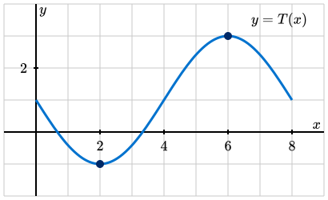
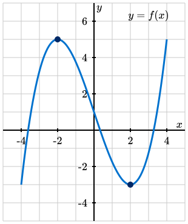
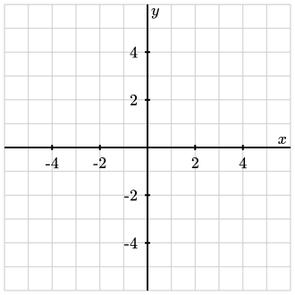

Objectives
-
I can identify the intervals where a function is increasing, decreasing, concave down, or concave up, and I can provide examples of familiar functions that have given increasing / decreasing and concave down / concave up behaviors.


